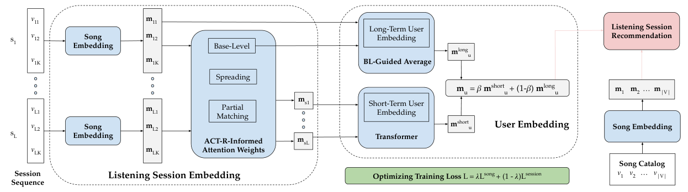

Transformers Meet ACT-R: Repeat-Aware and Sequential Listening Session Recommendation（当 Transformer 遇上 ACT-R：重听感知的序列化收听会话推荐）
- 会议/期刊: RecSys 2024 (Full Paper)
- 作者与机构: Viet-Anh Tran, Guillaume Salha-Galvan, Bruno Sguerra, Romain Hennequin（Deezer Research）
- 推荐链路定位: 召回（会话级 Next-Basket 候选生成）
- 研究方向: 序列与会话推荐 / 去偏公平与工业架构
- 论文原文: https://arxiv.org/abs/2408.16578v1
- 开源代码: https://github.com/deezer/recsys24-pisa（TensorFlow 实现 + Deezer 匿名化会话数据集）
TL;DR (1分钟核心速览)
音乐流媒体中"重听"是常态（Deezer 测试会话里 89.1% 的歌曲是历史听过的），但主流序列推荐（SASRec/BERT4Rec 系）以及会话推荐 CoSeRNN 都用均值池化表征会话，系统性低估重复消费，而纯 ACT-R 方法只做推理后处理、只能推荐老歌。本文提出 PISA：用 ACT-R 声明性记忆模块的三个激活分量（基级 BL、扩散 SPR、部分匹配 P）生成注意力权重来加权池化会话，再由 Transformer 学习会话序列的短期漂移，与 BL 加权的长期用户向量做门控融合。在 Last.fm 与 Deezer 上采用全库 Top-10 排序评测，NDCG 相对最优基线提升 32.5%（Last.fm）与 9.6%（Deezer），同时探索类指标 NDCG_Exp 提升 52.7%–70.8%。
Background & Motivation (背景与核心矛盾)
- 主流范式: 把收听会话视为 bag，用 RNN/Attention 序列模型（SASRec、CoSeRNN、Sets2Sets、BRL 超图）建模 basket 间转移，预测下一 basket；重听建模则多用频率类（P-Top）、近邻类（TIFU-KNN、UP-CF@r）或 LSTM（ReCANet）。
- 前人局限: ① 多数序列模型把会话用 average/max pooling 压成向量，重复模式这一关键信号在池化中丢失；② 已有的 ACT-R 工作（Reiter-Haas、Moscati）把 ACT-R 仅用于推理阶段打分修正，不参与训练，且搭配的是静态 CF/BPR，完全不建模偏好动态演化。
- 核心洞察 (Key Insight): 人类对音乐的偏好由"记忆可及性"驱动——越常听、越近期听（BL），越常与当前上下文共现（SPR），越与当前歌曲相似（P），该曲越容易被再次想起。作者统计证实测试会话的重复率高达 72.37%（Last.fm）/89.10%（Deezer），而现有模型 RepBias 普遍偏负（SASRec 为 −23.99/−3.45），即严重低估重听。
- 本文切入点: 把 ACT-R 激活值直接转成会话内部的注意力权重，让心理学先验进入前向计算与端到端训练，与 Transformer 动态建模同处一个框架。
Method (核心方法设计)
1. 整体框架 (Overall Architecture)
输入是用户 \(u\)的\(L\)个历史会话\(S^{(u)}=(s^{(u)}_1,\dots,s^{(u)}_L)\)，每个会话含\(K=10\)首歌。第一层：对每个会话内的每首歌计算 ACT-R 三分量并归一化为注意力权重，加权得到会话向量\(\mathbf{m}_{s^{(u)}}\)；第二层：会话向量序列加位置编码后送入\(B=2\)层、\(H=2\)头的 Transformer，取末位输出作为短期兴趣\(\mathbf{m}^{short}_u\)；第三层：用 BL 激活在用户历史中筛 Top-20 歌曲加权得到长期兴趣\(\mathbf{m}^{long}_u\)，经单层 FFN 学到的\(\beta\)融合为用户向量\(\mathbf{m}_u\)；最后以\(\mathbf{m}_u^\top\mathbf{m}_v\)对全库打分取 Top-\(K\) 作为下一会话推荐。整个模型以 BPR 歌曲损失 + 会话级损失的加权和端到端训练。
flowchart TD
A["历史会话序列 s_1..s_L（每会话 K=10 首）"] --> B["ACT-R 分量: BL / SPR / Partial Matching"]
B --> C["加权池化得会话向量 m_s"]
C --> D["Transformer (B=2, H=2) 得 m_short"]
A --> E["BL 加权 Top-20 得 m_long"]
D --> F["门控融合 m_u = β·m_short + (1-β)·m_long"]
E --> F
F --> G["全库点积打分 → Top-K=10 推荐"]
2. 关键设计拆解 (Key Designs)
-
ACT-R 引导的会话注意力池化（替代 mean/max pooling）：痛点是用均值池化抹平了"哪首歌正在被反复消费"。作者令会话向量为 \(\mathbf{m}_{s^{(u)}}=\sum_{v\in s^{(u)}}w_v\mathbf{m}_v\)，权重由三个分量线性组合后归一化：\(w_v=w_{BL}BL^{(u)}_v+w_{SPR}SPR^{(u)}_v+w_{P}P^{(u)}_v\)。其中基级分量\(BL^{(u)}_v=\mathrm{softmax}_{s^{(u)}}\big(\sum_k (t_{ref}-t^{(uv)}_k)^{-\alpha}\big)\)（\(\alpha=1/2\)）以幂律遗忘曲线同时编码频次与近因性，直觉上让"最近狂刷的热歌"主导会话表征；\(SPR^{(u)}_v=\sum_{v'\in s^{(u)},v'\neq v}C_{vv'}\)用共现矩阵\(C=D^{-1/2}FD^{-1/2}\)的归一化共听强度捕捉上下文共振；\(P^{(u)}_v=\sum_{v'\neq v}\mathbf{m}_v^\top\mathbf{m}_{v'}\)用嵌入内积引入内容相似度。三个\(w\) 全局共享、由单层 FFN 学习，即注意力权重本身可训练。
-
长期-短期用户表征的门控融合：\(\mathbf{m}_u=\beta\mathbf{m}^{short}_u+(1-\beta)\mathbf{m}^{long}_u\)，\(\beta\)由\([\mathbf{m}^{short}_u;\mathbf{m}^{long}_u]\)经 FFN 输出。短期分支接 Transformer（位置编码 + 多头自注意力，\(d=128\)），负责兴趣漂移；长期分支\(\mathbf{m}^{long}_u=\sum_{v\in \text{Top-BL}(u)}BL^u_v\mathbf{m}_v\) 只保留 BL 最高的 20 首，起到隐式去噪作用——把偶发、低激活的噪声收听剔除，只保留最能代表稳定品味的"高激活曲目"。这解释了为何 PISA 在探索指标上不塌陷：重听信号只调制用户向量的位置，并不硬性限制候选集。
-
训练目标、负采样与推理效率：\(\mathcal{L}(\Theta)=\lambda\mathcal{L}_{song}+(1-\lambda)\mathcal{L}_{session}\)，其中\(\mathcal{L}_{song}\)为逐子序列的 BPR 成对损失\(\ln\big(1+e^{-(\mathbf{m}_{u,l}^\top\mathbf{m}_v-\mathbf{m}_{u,l}^\top\mathbf{m}_{v'})}\big)\)（\(v\in s^{(u)}_{l+1}\)，\(v'\in o^{(u)}_{l+1}\)为\(K\)个负样本），\(\mathcal{L}_{session}=1-\mathbf{m}_{u,l}^\top\mathbf{m}_{s^{(u)}_{l+1}}\)对齐会话级语义。负采样分两版：PISA-U 均匀采样，PISA-P 按\(f(v)^{1/2}\)（听众人数）的流行度采样，使负样本更"难"。推理为纯内积检索，离线 ANN 可直接复用，开销与 SASRec 同级。
Experimental Setup & Evaluation Protocol (实验设置与评估协议)
- 数据集与预处理: 会话按 ≥20 分钟不活跃切分，每会话仅取前 \(K=10\) 首（长会话尾部的相关性弱）；Last.fm 取最近一年、保留 ≥1k 收听行为的 15.7k 首歌；Deezer 为 2022 年 3–8 月法国区 340 万用户、50k 首热门歌。
| 数据集 | #Users | #Items | #Sessions | 过滤/序列构造 | 特征/场景说明 |
|---|---|---|---|---|---|
| Last.fm | 15.7k 歌为约束 | 15.7k | ≈465k | 用户 ≥50 会话；滑窗 21 会话、步长 5；\(L=20\) | 公开、含时间戳的收听事件 |
| Deezer | 3.4M（法国区） | 50k | ≈2.1M | 用户 ≥250 会话；滑窗 31 会话、步长 20；\(L=30\) | 工业私有，≥30s 播放计一次 |
- 数据划分与防穿越 (Splitting Strategy): 全局时间戳/序列顺序切分——每个用户最后 10 条序列为测试集、紧邻的前 5 条为验证集，观测前 \(L\)个会话预测第\(L+1\) 个会话，未来会话绝不参与训练。
- 排名评测协议 (Ranking Protocol): Full-Ranking（全库未交互歌曲排序）——模型对全集 \(V\) 逐曲打分取 Top-10，无负采样候选集缩水；指标为 Recall@10、NDCG@10 及按真实会话构成拆分的 Rep/Exp 变体，外加 beyond-accuracy 的 RepRatio（与 GT 比 72.37%/89.10%）、RepBias、MR（中位置信度越低越不流行）。
- 对比基线与超参设置: 10 个基线覆盖流行度（G-Top/P-Top）、非重听序列（SASRec、CoSeRNN）、重听序列（RepeatNet、Sets2Sets、TIFU-KNN、UP-CF@r）与 ACT-R 系（ACT-R-Repeat、ACT-R-BPR）；\(d=128\)、\(\alpha=1/2\)、\(B=2\)、\(H=2\)、Adam、batch 512、最多 100 epoch，\(\lambda\)在\(\{0,0.3,0.5,0.8,0.9,1.0\}\) 网格搜索；结果 5 次运行取均值 ± 标准差（未报告显著性检验）。
Key Experimental Results (实验关键数据)
1. 主实验对比 (Main Results)
| 数据集 / 模型 | NDCG | Recall | NDCG_Rep | NDCG_Exp | RepBias | MR |
|---|---|---|---|---|---|---|
| Last.fm（RepRatio-GT=72.37%） | ||||||
| G-Top | 1.36 | 1.29 | 1.50 | 0.62 | −51.15 | 40.20 |
| SASRec | 5.36 | 5.15 | 5.65 | 1.90 | −23.99 | 18.71 |
| CoSeRNN | 6.99 | 6.65 | 6.55 | 3.22 | −30.32 | 7.44 |
| P-Top | 8.34 | 8.10 | 11.32 | 0.00 | +27.63 | 10.75 |
| TIFU-KNN | 9.05 | 8.71 | 12.33 | 0.07 | +26.67 | 15.95 |
| Sets2Sets | 6.90 | 6.75 | 7.55 | 2.11 | +4.76 | 11.14 |
| ACT-R-Repeat | 9.18 | 9.12 | 13.94 | 0.00 | +27.63 | 8.29 |
| ACT-R-BPR | 3.07 | 3.02 | 4.11 | 0.38 | +7.28 | 7.85 |
| PISA-U | 12.09 | 11.59 | 11.51 | 5.45 | −11.14 | 9.35 |
| PISA-P | 12.16 | 11.77 | 11.49 | 5.50 | −10.74 | 8.24 |
| Improv.% vs best baseline | +32.46% | +29.06% | −17.6% | +70.81% | — | — |
| Deezer（RepRatio-GT=89.10%） | ||||||
| SASRec | 6.05 | 5.89 | 6.47 | 0.60 | −3.45 | 67.56 |
| CoSeRNN | 2.57 | 2.46 | 2.69 | 0.44 | −17.62 | 49.14 |
| P-Top | 7.83 | 7.51 | 8.37 | 0.00 | +10.90 | 45.33 |
| TIFU-KNN | 10.22 | 9.64 | 11.07 | 0.22 | +5.70 | 88.33 |
| Sets2Sets | 7.84 | 7.40 | 8.03 | 1.43 | +2.19 | 31.94 |
| ACT-R-Repeat | 7.93 | 7.95 | 8.88 | 0.00 | +10.90 | 31.45 |
| ACT-R-BPR | 2.38 | 2.36 | 2.51 | 0.42 | −9.00 | 38.13 |
| PISA-U | 10.27 | 9.54 | 10.46 | 2.06 | −0.83 | 55.95 |
| PISA-P | 11.20 | 10.40 | 11.08 | 3.13 | −3.94 | 39.45 |
| Improv.% vs best baseline | +9.59% | +7.89% | +0.09% | +52.68% | — | — |
2. 消融实验 (Ablation Study)
原文未做逐组件的严格消融，仅报告负采样变体对比与一个"权重塌缩"式组件分析：
| 配置 | Last.fm NDCG | Last.fm NDCG_Exp | Last.fm MR | Deezer NDCG | Deezer NDCG_Exp | Deezer MR |
|---|---|---|---|---|---|---|
| PISA-U（均匀负采样） | 12.09 | 5.45 | 9.35 | 10.27 | 2.06 | 55.95 |
| PISA-P（流行度负采样） | 12.16 | 5.50 | 8.24 | 11.20 | 3.13 | 39.45 |
| w/o 部分匹配 \(P^{(u)}_v\) | 权重\(\to 0\)，等效于退化（作者自述） | — | — | — | — | — |
| w/o 短期 Transformer（仅 \(m^{long}\)） | 未报告，需自行复现验证 | — | — | — | — | — |
3. 关键实验发现 (Key Findings)
- 重听建模是收益主引擎，且必须"可训练+序列化"：所有 ×（非重听）模型的 NDCG 普遍低于 ✓ 模型；而纯推理阶段的 ACT-R-BPR 仅 3.07/2.38，远低于把 ACT-R 写进前向与损失的 PISA-P（12.16/11.20），说明"心理先验进入训练"比"推理期打分修正"高出一个量级（Last.fm NDCG 约 4×）。
- 只有 PISA 同时不牺牲探索：PISA-P 在 Last.fm 拿到 NDCG 12.16 的同时 NDCG_Exp 达 5.50（优于 CoSeRNN 的 3.22，提升 70.8%），而重听专用基线（P-Top、ACT-R-Repeat、TIFU-KNN）在 Exp 上几乎为 0.00–0.07——它们是靠"只推老歌"换来的 Rep 高分，属于结构性缺陷。
- 流行度负采样同时改善精度与去偏：从 PISA-U 换到 PISA-P，Deezer NDCG 10.27→11.20、NDCG_Exp 2.06→3.13，且 MR（流行度偏置）从 55.95 降至 39.45，优于几乎全部基线；同时 RepBias 收敛到 −0.83%（Last.fm −10.74%），是少数既不过度重复也不过度的模型。
Highlights & Limitations (亮点、对比与审稿批判)
- 与代表作对比 (vs. Prior Work): 相对 SASRec / CoSeRNN，PISA 不改序列主干，只替换会话池化算子与用户长期向量的构造方式，增量极小但收益显著；相对 Reiter-Haas 的 ACT-R-Repeat 与 Moscati 的 ACT-R-BPR，本质区别是把 ACT-R 从"推理期分数重排"搬到"表征学习内部"，从而继承了 Transformer 的动态建模能力；相对 TIFU-KNN / UP-CF@r 等重听 NBR，PISA 不做"只推历史曲"的硬约束，因此探索指标不塌陷。
- 可迁移亮点: ① 用幂律遗忘曲线 \(\sum_k (t_{ref}-t_k)^{-\alpha}\) 生成可学习的注意力先验，可平移到新闻/短视频等强近因性场景的池化层；② 用"最高激活 Top-N"截断构造长期用户向量，是一种廉价且无需额外网络的隐式历史去噪手段。
- 审稿级局限批判: ① 缺严格逐组件消融与显著性检验，\(P\)分量权重收敛为 0 说明三分量实为两分量，设计冗余；\(w\)与\(\beta\)的可学习性对数据规模敏感，小数据集上可能过拟合。② 端到端仍需逐会话计算 BL/SPR（涉及共现矩阵\(C\) 与每首候选歌的激活），且 Deezer 场景下 MR 39.45 仍偏流行，冷启动新歌与新用户（无历史 BL）完全未被评估，作者亦承认未建模"好奇心"这一反向动力。
Rating (四维评分)
- 方法创新性 (Novelty): ⭐⭐⭐⭐ （用认知架构激活函数重定义注意力池化，把心理学先验变成可训练算子，思路新颖但数学增量偏轻）
- 评估协议与实验扎实度 (Protocol & Experiments): ⭐⭐⭐⭐ （双数据集 + 全库 Top-10 排序 + Rep/Exp 拆分指标与 beyond-accuracy 分析很完备，扣分在无显著性检验与无严格消融）
- 写作与数学规范度 (Clarity & Rigor): ⭐⭐⭐⭐ （三分量公式与训练流程交代清晰，但 \(P\) 分量失效未深究，部分超参与复杂度分析缺失）
- 工业落地与复现价值 (Industrial & Practical Value): ⭐⭐⭐⭐⭐ （Deezer 真实场景验证 + 开源代码与匿名数据集发布，推理与 SASRec 同级，工程可即插即用）